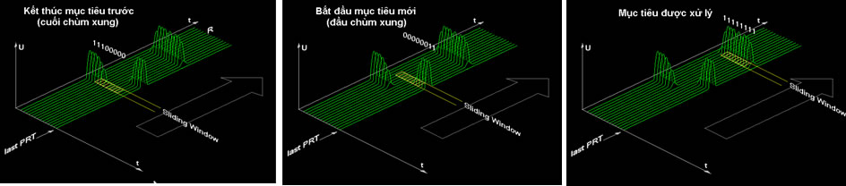
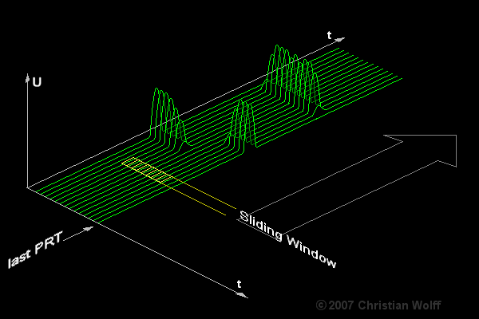
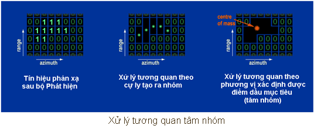
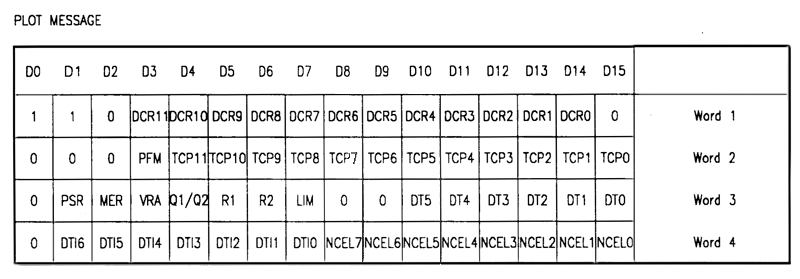
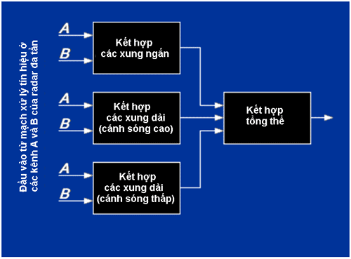

1-Tạo điểm dấu mục tiêu
Tạo điểm dấu mục tiêu (Plot Extraction)
Từ tín hiệu phản xạ được phát hiện, thiết bị tạo điểm dấu mục tiêu xác định và tạo báo cáo về tọa độ (cự ly, phương vị), và có thể cả biên độ tín hiệu và vận tốc bán kính (tần số Doppler), của các mục tiêu. Các phương pháp thường được sử dụng là xử lý “Cửa sổ trượt” (Sliding window) và “Tương quan tâm nhóm” (Centre of mass correlation).
Cửa sổ trượt
Đây là phương pháp thông dụng nhất để tạo điểm dấu mục tiêu. Các tín hiệu xuất hiện (hay phát hiện) mục tiêu trong từng chu kỳ lặp lại (PRT) được lưu trong mảng nhớ 2 chiều cự ly/phương vị. Một cửa sổ đẳng cự ly có kích thước N ô theo chiều phương vị (N thường có giá trị từ 8 – 16 tùy thuộc vào thời gian chiếu xạ mục tiêu và tần số lặp của radar) trượt dọc chiều cự ly của mảng nhớ theo từng bước bằng lượng tử cự ly (400 hay 800 ns). Nếu tại cùng một cự ly số lượng tín hiệu xuất hiện mục tiêu trong các ô của cửa sổ trượt lớn hơn hoặc bằng giá trị K (tiêu chuẩn tương quan K/N đã chọn) thì tạo tín hiệu “Suy đoán mục tiêu” (PAO).
Cự ly của mục tiêu được xác định theo tổng số lượng tử cự ly đã trượt qua, còn phương vị của mục tiêu được xác định theo trị số của bộ đếm tính từ khi xuất hiện gia số (lượng tử) phương vị tín hiệu phương bắc cho đến thời điểm này.

Xử lý “Cửa sổ trượt”

Tương quan tâm nhóm
Tín hiệu xuất hiện mục tiêu cũng được lưu trong các ô nhớ cự ly/phương vị. Xử lý theo thuật toán tương quan cự ly sẽ tạo ra các nhóm tín hiệu xuất hiện mục tiêu. Tiếp tục xử lý tương quan theo phương vị sẽ xác định được điểm dấu mục tiêu (tâm nhóm). Phương pháp này sử dụng tốt hơn thông tin của tín hiệu và xác định tọa độ chính xác hơn.

Tách và tạo thông báo điểm dấu
Một điểm dấu được tách biệt khi phạm vi góc phương vị Δθm đo được của nó đáp ứng tiêu chuẩn tách (Δθmin < Δθm < Δθmax). Trong trường hợp này điểm dấu được thừa nhận và các tọa độ riêng của nó được xác định rõ để tạo thông báo về điểm dấu. Mỗi thông báo điểm dấu bao gồm 4 từ 16-bit chứa các nội dung cụ thể sau:
+ Cự ly được hiệu chỉnh;
+ Phạm vi phương vị của điểm dấu;
+ Phương vị (tâm của điểm dấu).

PCR – Cửa sổ Cự ly/Phương vị; DCR – Cự ly được hiệu chỉnh (DCR11 đến DCR0); PRM – Tín hiệu phản xạ kiểm tra; TCP – Vị trí tâm của điểm dấu (TCP11 đến TCP0); ME – NU, VRA - Tốc độ quay anten; Q1/Q2 – Lựa chọn lượng tử cự ly 400/800 ns; DT – Delta Theta (1/2 góc mở rộng phương vị (DT5 đến DT0); DTI – Dữ liệu từ BITE (DTI6 đến DTI0)
Điều khiển phối hợp các điểm dấu của mục tiêu
Đây là chức năng kết hợp điểm dấu được tạo ra từ các kênh hay các nguồn khác nhau của radar sơ cấp thành điểm dấu đơn tốt nhất. Radar sơ cấp điển hình tạo ra điểm dấu từ một vài hay tất cả các kênh sau đây:
+ Mỗi một kênh của radar có thể tạo ra điểm dấu riêng của mình;
+ Sử dụng nhiều dạng xung phát (ví dụ xung ngắn và xung dài) có thể tạo ra điểm dấu từ mỗi dạng xung này;
+ Chế độ đa tần tạo ra điểm dấu theo từng tần số công tác;
+ Tín hiệu từ các cánh sóng cao và thấp của anten được xử lý riêng cũng tạo ra các điểm dấu riêng.
Việc kết hợp các nguồn thông tin này thường được thực hiện tốt nhất ở mức điểm dấu. Kết hợp dữ liệu sớm hơn trong hệ thống thường dẫn đến mất mát thông tin, đặc biệt là trước khi xử lý tương quan (coherent integration). Khi kết hợp các điểm dấu thường kèm theo xử lý “trọng số trung bình” (weighted average) thông tin về toạ độ của những điểm dấu có liên quan theo một vài tham số khác, chẳng hạn như mức năng lượng của tín hiệu.

Sơ đồ khối kết hợp điểm dấu của radar đa tần có sử dụng nén xung và các cánh sóng cao – thấp
|